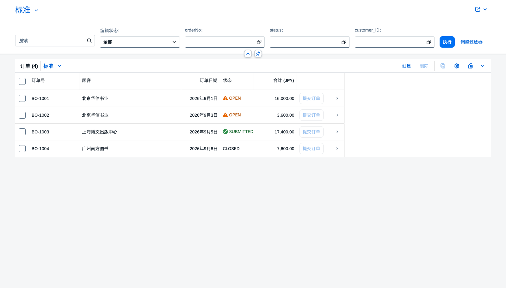

示范项目：图书受注管理 —— 从需求到 Fiori 到部署
项目本体在 project-code/demo-node/ 与 project-code/demo-java/ · 本页每一步都给命令 + 期望输出 + 验证方法
- 建库：
npm run deploy→ 6 张表（Books 5 / Customers 3 / BookOrders 4 / BookOrderItems 9 行） - 服务：
npm start→http://localhost:4004/odata/v4/book-order - 验收：
bash test/odata-verify.sh→ PASS 26 / FAIL 0 - 界面：Fiori Elements List Report 在浏览器里列出订单（下方有真实截图）
work/evidence/01…08_*.txt，本页引用时都标了出处。1. 需求：一页看懂这个项目
业务背景：一家图书批发商需要一个「订单录入与跟进」的小服务：录入订单与明细、自动算钱、跟踪状态、在浏览器里看得见。
| # | 需求（可验证的写法） | 实现位置 | 怎么证明做到了 |
|---|---|---|---|
| R1 | 维护图书与顾客主数据，价格以主数据为准 | db/schema.cds + CSV | 读 /Books 有 5 条，读 /Customers 有 3 条 |
| R2 | 订单号由服务端生成，不能重复 | before CREATE | 不传订单号 → 自动得到 BO-1005；传已存在的 → 409 |
| R3 | 明细金额 = 图书单价 × 数量，客户端不能自己算 | before CREATE/UPDATE 明细 | POST quantity:3, book:1003 → 返回 amount:8400 |
| R4 | 订单合计随明细变化自动汇总（新增/修改/删除） | after 明细 | 明细变化后读订单 → totalAmount 更新 |
| R5 | 没有明细、或合计为 0 的订单不能提交 | 绑定动作 submitOrder | 空订单提交 → 400；正常订单 → 200 且状态变 SUBMITTED |
| R6 | 能看到「按订单汇总的行数与金额」 | 函数 getOrderSummary() | 返回 4 行，BO-1001 的 totalAmount=16000 |
| R7 | 只有登录用户能访问 | @(requires: 'authenticated-user') | 匿名 → 401；带凭据 → 200 |
| R8 | 在浏览器里能列出订单、能进明细页 | app/book-orders/ | 截图见 §9 |
| R9 | 同一个模型能在 Java 运行时上跑 | project-code/demo-java/ | 编译成功 + 服务启动 + $metadata 200（见 §10 的诚实说明） |
| R10 | 能打包部署到 Cloud Foundry | mta.yaml + xs-security.json | 本机未实测（需 BTP 账号），命令与验证清单见 §11 |
2. 交付物与文件树
textproject-code/ ├── demo-node/ ① Node.js 运行时（本机实测通过） │ ├── db/schema.cds 领域模型：Books / Customers / BookOrders / BookOrderItems / OrderItemView │ ├── db/data/*.csv 种子数据（4 个文件，表头 = 物理列名） │ ├── srv/book-order-service.cds 服务定义（投影 / 草稿 / 动作 / 函数 / 授权） │ ├── srv/book-order-service.js 业务逻辑（before / after / on） │ ├── app/book-orders/ │ │ ├── annotations.cds Fiori 的 UI.* 注解（列、字段组、动作按钮、Criticality） │ │ └── webapp/{index.html,manifest.json,Component.js} │ ├── test/odata-verify.sh 26 条 OData 验收断言（curl） │ ├── test/dev-proxy.js 本地给浏览器注入 mock 认证的小代理（看 Fiori 用） │ ├── approuter/{package.json,xs-app.json} 部署时的对外入口 │ ├── mta.yaml / xs-security.json 部署描述 + 授权定义 │ └── package.json npm scripts + cds 配置（sqlite / mocked 认证） └── demo-java/ ② Java 运行时（同一套 db/ 与 srv/*.cds） ├── pom.xml + srv/pom.xml 父 POM + Maven 模块（cds-maven-plugin 链） ├── db/, srv/book-order-service.cds └── srv/src/{main,test}/… Application / Handler / application.yaml / JUnit 测试
逐文件全文见 源码页；每个文件有稳定锚点（code.html#f-12）。
3. STEP 1：环境与安装
- 切到 LTS 的 Node（本机系统 Node 26 装不上
better-sqlite3的原生模块）：
验证：版本号的主版本是偶数 LTS（20 或 22）。奇数版本没有对应的预编译原生模块。bashexport PATH="$(dirname "$(npx -y node@22 -p process.execPath)"):$PATH" node -v # → v22.23.2 - 安装依赖：
验证：结尾出现bashcd project-code/demo-node npm installadded 328 packages。若看到npm warn install-scripts better-sqlite3， 说明原生模块的安装脚本被 npm 拦下了 —— 本机这样做：npm install-scripts approve better-sqlite3 && npm rebuild better-sqlite3， 然后用一行 node 命令确认new (require('better-sqlite3'))(':memory:')不报错。 - 确认 cds 版本成对：
验证：bashnpx cds --version # @sap/cds: 9.9.3 @sap/cds-dk: 9.x Node.js: v22.23.2@sap/cds与@sap/cds-dk的大版本一致（cds-dk 10 要求 cds ≥ 9）。
4. STEP 2：领域模型（db/schema.cds）
cdsnamespace sap.training.bookorder; using { cuid, managed } from '@sap/cds/common'; entity Books { key ID : Integer; title : String(120) not null; author : String(80); price : Decimal(9,2) not null; currency : String(3) default 'JPY'; // 不用 Currency 型：本地 SQLite 会校验 codelist stock : Integer default 0; } entity Customers { key ID : Integer; name : String(80) not null; city : String(60); country : String(20); email : String(120); } entity BookOrders : managed { key ID : UUID; orderNo : String(16) not null; customer : Association to Customers; orderDate : Date default $now; status : String(10) default 'OPEN'; note : String(255); totalAmount : Decimal(13,2) default 0; statusCriticality : Integer default 2; // 派生字段：给 Fiori 状态列着色 items : Association to many BookOrderItems on items.order = $self; } entity BookOrderItems : managed { key ID : UUID; order : Association to BookOrders; book : Association to Books; quantity : Integer default 1; amount : Decimal(13,2); } /* 带主键的视图 → 可以直接暴露为只读实体 */ entity OrderItemView as select from BookOrderItems { key ID, order.orderNo as orderNo, order.orderDate as orderDate, book.ID as bookID, book.title as bookTitle, book.price as unitPrice, quantity, amount };
- 不用
Composition：managed composition 会在父表加 FK 列，用 CSV 播种时父侧 FK 是空的 →$expand=items返回[]。改成子表放普通 FK 列 + 父表声明Association to many … on，两边都正常。 - 通信用
String(3)而不是Currency：Currency会校验sap_common_Currencies代码表， 本地部署时那张表是空的，写入JPY会被拒。 - 视图必须有主键才能当实体暴露：聚合（group by）视图拿不到主键，所以汇总走服务层的函数（见 §7 的 ⑤）。
5. STEP 3：种子数据（db/data/*.csv）
每个文件对应一张表，文件名是 <命名空间>-<实体名>.csv，表头必须写物理列名
（关联字段是 <关联名>_<目标主键>，例如 customer_ID、book_ID）。
textdb/data/sap.training.bookorder-BookOrders.csv ID,orderNo,customer_ID,orderDate,status,note,totalAmount,statusCriticality 4a1f8c03-0001-4000-8000-000000000001,BO-1001,1000,2026-09-01,OPEN,首次订货,16000,2 4a1f8c03-0002-4000-8000-000000000002,BO-1002,1000,2026-09-03,OPEN,,3600,2 4a1f8c03-0003-4000-8000-000000000003,BO-1003,2000,2026-09-05,SUBMITTED,加急,17400,3 4a1f8c03-0004-4000-8000-000000000004,BO-1004,3000,2026-09-08,CLOSED,已结案,7600,0
bashnpm run deploy # = cds deploy --to sqlite:db.sqlite # > init from db/data/sap.training.bookorder-Customers.csv # > init from db/data/sap.training.bookorder-Books.csv # > init from db/data/sap.training.bookorder-BookOrders.csv # > init from db/data/sap.training.bookorder-BookOrderItems.csv # /> successfully deployed to db.sqlite
部署输出看起来成功也可能实际失败（一行坏列会让整个事务回滚，而输出里只有一段 cds.ql dump）。 所以务必用 SQL 直接核对表与行数（本机实测）：
bashpython3 ../../work/sqlite_tables.py db.sqlite # TABLES: ['BookOrderService_BookOrders_drafts', 'DRAFT_DraftAdministrativeData', 'cds_outbox_Messages', # 'sap_training_bookorder_BookOrderItems', 'sap_training_bookorder_BookOrders', # 'sap_training_bookorder_Books', 'sap_training_bookorder_Customers'] # sap_training_bookorder_BookOrderItems 9 rows # sap_training_bookorder_BookOrders 4 rows # sap_training_bookorder_Books 5 rows # sap_training_bookorder_Customers 3 rows
sap.training.bookorder.BookOrders → 表 sap_training_bookorder_BookOrders
（命名空间的点变成下划线，表名保持大小写）。带草稿的实体还会多出 *_drafts 表与 CAP 自己的
DRAFT_*、cds_outbox_* 表。6. STEP 4：服务定义（srv/book-order-service.cds）
cdsusing { sap.training.bookorder as db } from '../db/schema'; @path: '/odata/v4/book-order' // Node 运行时：@path 即完整路径 service BookOrderService @(requires: 'authenticated-user') { entity Books as projection on db.Books; entity Customers as projection on db.Customers; @odata.draft.enabled // Fiori 编辑需要草稿 entity BookOrders as projection on db.BookOrders actions { action submitOrder() returns String; }; @cds.redirection.target // 两张实体都源自同一张表 → 必须指定重定向目标 entity BookOrderItems as projection on db.BookOrderItems; @readonly entity OrderItemView as projection on db.OrderItemView; function getOrderTotal(orderNo : String) returns Decimal(13,2); type OrderSummaryRow : { orderNo:String(16); customerName:String(80); orderDate:Date; status:String(10); itemCount:Integer; totalAmount:Decimal(13,2); }; function getOrderSummary() returns array of OrderSummaryRow; }
| 写法 | 为什么需要它 | 少了会怎样 |
|---|---|---|
@(requires: 'authenticated-user') | 整服务要求登录 | 任何人都能读写数据 |
@odata.draft.enabled | Fiori Elements 的编辑走 draft | 界面上没有可编辑的 Create/Edit |
@cds.redirection.target | 两张实体（BookOrderItems 与 OrderItemView）都指向同一张表 | 启动报 can't auto-redirect BookOrders:items |
@readonly | 视图实体不允许写入 | 对视图 POST 会落到基表，语义变得含糊（现在返回 405） |
聚合用 function 而非实体 | 聚合视图没有主键 | cds2edm: Expected entity to have a primary key |
7. STEP 5：业务逻辑（srv/book-order-service.js）
五类实现位置，每一类都给「代码 → 目的 → 失败模式」：
① before CREATE 订单头：编号 + 查重 + 主数据校验 + 派生字段
jsthis.before('CREATE', BookOrders, async (req) => { const data = req.data; if (!data.orderNo) { data.orderNo = await nextOrderNo(); // BO-#### 自增 } else { const dup = await SELECT.one.from(BookOrders).where({ orderNo: data.orderNo }); if (dup) req.reject(409, `订单号 ${data.orderNo} 已存在，请更换`); } if (!data.orderDate) data.orderDate = new Date().toISOString().slice(0, 10); if (data.status == null) data.status = 'OPEN'; data.statusCriticality = criticalityOf(data.status); if (data.customer_ID != null) { const cust = await SELECT.one.from(Customers).where({ ID: data.customer_ID }); if (!cust) req.reject(400, `顾客 ${data.customer_ID} 不存在，请先维护主数据`); } });
throw new Error(...) 会变成 500（客户端拿到的是"内部错误"）；
必须用 req.reject(4xx, msg) 才能把业务消息带出去。另外：BookOrders 开了草稿，
所以这个钩子在激活草稿时触发 —— 用 curl 直接 POST 会先拿到一个 draft 行（IsActiveEntity=false），
要再调 …/BookOrderService.draftActivate 才真正落库。② before 明细：金额派生计算
jsthis.before(['CREATE', 'UPDATE'], BookOrderItems, async (req) => { const data = req.data; if (data.quantity != null && data.quantity <= 0) req.reject(400, '数量必须大于 0'); const book = await SELECT.one.from(Books).where({ ID: data.book_ID }); if (!book) req.reject(400, `图书 ${data.book_ID} 不存在`); data.amount = round2(Number(book.price) * Number(data.quantity)); });
验证：POST /BookOrderItems {order_ID, book_ID:1003, quantity:3} → 返回 amount = 8400（2800 × 3）。
③ after 明细：父表汇总回写（含删除）
jsconst recalc = async (orderID) => { const row = await SELECT.one.from(BookOrderItems) .columns('sum(amount) as total').where({ order_ID: orderID }); await UPDATE(BookOrders).set({ totalAmount: round2(Number(row?.total ?? 0)) }).where({ ID: orderID }); }; this.after('CREATE', BookOrderItems, async (_, req) => recalc(req.data.order_ID)); this.after('UPDATE', BookOrderItems, async (_, req) => recalc(req.data.order_ID)); this.after('DELETE', BookOrderItems, async (_, req) => { // 删除后的行不在结果里，键要从请求取 const orderID = req.data?.order_ID ?? req.params?.[req.params.length - 1]?.order_ID; await recalc(orderID); });
UPDATE(entity, keyValue).with({...}) 只在主键恰好叫 ID 时可用，否则要用
UPDATE(entity).set({...}).where({...})（本项目就是后者）。
② after DELETE 的 each 里没有被删行的字段 —— 键只能从 req 里取。④ 绑定动作 submitOrder：状态迁移 + 业务校验
jsthis.on('submitOrder', BookOrders, async (req) => { const ID = req.params[req.params.length - 1].ID; const order = await SELECT.one.from(BookOrders).where({ ID }); if (!order) req.reject(404, `订单 ${ID} 不存在`); if (['SUBMITTED', 'CLOSED'].includes(order.status)) req.reject(409, `订单 ${order.orderNo} 当前状态为 ${order.status}，不能重复提交`); const items = await SELECT.from(BookOrderItems).where({ order_ID: ID }); if (items.length === 0) req.reject(400, `订单 ${order.orderNo} 没有明细，不能提交`); if (Number(order.totalAmount) <= 0) req.reject(400, `订单 ${order.orderNo} 合计金额为 0，请检查明细金额`); await UPDATE(BookOrders).set({ status: 'SUBMITTED', statusCriticality: criticalityOf('SUBMITTED') }) .where({ ID }); return `订单 ${order.orderNo} 已提交，合计 ${Number(order.totalAmount).toFixed(2)} JPY（${items.length} 行）`; });
调用（注意绑定动作要在 URL 上带目标键）：
bashcurl -u alice:alice -X POST \ "http://localhost:4004/odata/v4/book-order/BookOrders(ID=4a1f8c03-0001-4000-8000-000000000001,IsActiveEntity=true)/submitOrder" \ -H 'Content-Type: application/json' -d '{}'
⑤ 无绑定函数：聚合（视图没有主键，只能这样暴露）
jsthis.on('getOrderTotal', async (req) => { const { orderNo } = req.data; const order = await SELECT.one.from(BookOrders).where({ orderNo }); if (!order) req.reject(404, `订单号 ${orderNo} 不存在`); const row = await SELECT.one.from(BookOrderItems).columns('sum(amount) as total') .where({ order_ID: order.ID }); return round2(Number(row?.total ?? 0)); }); this.on('getOrderSummary', async () => { const orders = await SELECT.from(BookOrders) .columns('ID','orderNo','orderDate','status','customer.name as customerName').orderBy('orderNo'); const agg = await SELECT.from(BookOrderItems) .columns('order_ID','count(ID) as itemCount','sum(amount) as totalAmount').groupBy('order_ID'); const byOrder = new Map(agg.map(a => [a.order_ID, a])); return orders.map(o => ({ ...o, itemCount: Number(byOrder.get(o.ID)?.itemCount ?? 0), totalAmount: round2(Number(byOrder.get(o.ID)?.totalAmount ?? 0)) })); });
8. STEP 6：启动服务并做 OData 验收
bashnpm start # [cds] - serving BookOrderService { at: [ '/odata/v4/book-order' ], impl: 'srv/book-order-service.js' } # [cds] - server listening on { url: 'http://localhost:4004' } # 另一个终端： bash test/odata-verify.sh
验收脚本把 26 条断言按 7 组跑一遍，每组都给期望值与实际值。本机实测结果（完整输出在
work/evidence/04_odata.txt）：
| 组 | 断言（节选） | 本机实测 |
|---|---|---|
| 1 服务与认证 | $metadata 200 / 匿名 401 / bob 200 / 任意用户名在 mocked 下 200 | 4 / 4 PASS mocked 认证不是真认证，放行任意用户 —— 这条本身就是教学点 |
| 2 读 | 过滤 OPEN → 2 条；$expand=items → 3 行；只读视图 9 条；视图带关联列名 | 4 / 4 PASS |
| 3 函数 | getOrderTotal('BO-1003')=17400；不存在 → 404；汇总 4 行；BO-1001 合计 16000 | 4 / 4 PASS |
| 4 写 | POST 明细金额 = 2800×3 = 8400；父订单合计回写 12000 | 2 / 2 PASS |
| 5 负向 | 数量 0 → 400；图书不存在 → 400；只读实体 POST → 405 | 3 / 3 PASS |
| 6 草稿 | POST 得到草稿；重复订单号激活 → 409；顾客不存在 → 400；正常激活 → 201 且自动编号 BO-1005 | 5 / 5 PASS |
| 7 绑定动作 | 空订单提交 400；正常提交 200；状态变 SUBMITTED；重复提交 409 | 4 / 4 PASS |
| 合计 | PASS 26 / FAIL 0 | |
rm -f db.sqlite && npm run deploy 后重启服务。
若要可重复，把断言写在 mocha + cds.test 里（每次起独立进程与干净库），写法见
⑦ 测试体系。9. STEP 7：Fiori Elements 界面
界面由三样东西决定：OData 服务（CAP 已就绪）+ 注解（app/book-orders/annotations.cds）
+ manifest（webapp/manifest.json 用哪个模板、路由怎么走）。
cdsannotate service.BookOrders with @( UI.HeaderInfo: { TypeName: '订单', TypeNamePlural: '订单', Title: { Value: orderNo }, Description: { Value: customer.name } }, UI.SelectionFields: [ orderNo, status, customer_ID ], UI.LineItem: [ { $Type:'UI.DataField', Label:'订单号', Value: orderNo }, { $Type:'UI.DataField', Label:'顾客', Value: customer.name }, { $Type:'UI.DataField', Label:'订单日期', Value: orderDate }, { $Type:'UI.DataField', Label:'状态', Value: status, Criticality: statusCriticality }, { $Type:'UI.DataField', Label:'合计 (JPY)', Value: totalAmount }, { $Type:'UI.DataFieldForAction', Label:'提交订单', Action:'BookOrderService.BookOrders/submitOrder', Inline:true, Determining:true } ], UI.Facets: [ { $Type:'UI.ReferenceFacet', Label:'订单信息', Target:'@UI.FieldGroup#OrderData' }, { $Type:'UI.ReferenceFacet', Label:'订单明细', Target:'items/@UI.LineItem' } ], totalAmount: @readonly, statusCriticality: @UI.Hidden, items: @UI.Hidden );
在本地打开界面（CAP 服务要求认证，而浏览器不会主动带凭据，所以要用自带的注入认证的小代理）：
bashnode test/dev-proxy.js # 4005 → 4004，给每个请求补 Authorization: Basic alice:alice # open http://localhost:4005/book-orders/webapp/index.html # 或者一条命令起全套： bash tools/serve_demo.sh start && bash tools/serve_demo.sh status

- 页面全白：
html/body/#container没有确定高度 → 容器 computed height = 0px。 用data-sap-ui-component自动挂载时更容易踩；本项目改成显式new sap.ui.core.ComponentContainer({ height: "100%" })并在页面上写了四行 CSS。 sap.fe.*不在 OpenUI5 里：sdk.openui5.org上/resources/sap/fe/是 404， 必须用ui5.sap.com的 SAPUI5；并且要挑 CDN 上真带sap.fe的版本（本项目用 1.136.0）。- 注解写错会让页面崩：
UI.LineItem里写了Value: items.$count→ UI5 抛DataField::items::$count - Stable Id could not be generated…并连带TypeError: Cannot read properties of undefined (reading 'map')，整个表格不渲染。删掉该列即恢复。
10. STEP 8：换成 Java 运行时
把 db/ 与 srv/book-order-service.cds 复制到 Maven 工程里，业务逻辑改写成事件处理器。
手顺、代码与踩坑见 ⑥ CAP Java 服务实现。这里只放本机实测的结论：
| 检查项 | 结果 |
|---|---|
mvn compile（71 个源文件） | ✅ BUILD SUCCESS |
| 服务启动 / 模型注册 / CSV 灌入 H2 / handler 挂载 | ✅ 启动日志全部出现 |
GET /odata/v4/book-order/$metadata | ✅ 200 |
| 带认证读实体、函数、动作 | ⚠ 未通过：本地 mock 用户配置在本会话没找出正确写法，一律 401。 完整记录与排查方向在 java.html §10 |
@path 语义不同（Java 侧是相对 servlet 基路径的，
照抄 Node 的写法会得到 /odata/v4/odata/v4/book-order）；② $metadata 能打开
不等于数据能读（元数据通常不受实体级授权限制）。排错第一步永远是打开 CAP 的索引页
http://localhost:8080/ 看真实 URL。11. STEP 9：打包与部署（需 BTP 账号）
bashnpm ci npx cds build --production # → gen/srv（服务）、gen/db（HDI 建表描述） npm i -g mbt && mbt build -t mta_archives cf login -a https://api.cf.ap10.hana.ondemand.com --sso cf deploy mta_archives/demo-node_1.0.0.mtar -f cf apps # 期望：demo-node-srv / demo-node-approuter 都是 started
mta.yaml 里声明的四个东西决定了“部署后能不能用”：
| 声明 | 作用 | 验证 |
|---|---|---|
demo-node-srv（nodejs 模块） | 跑 CAP 服务 | cf logs demo-node-srv --recent 里出现 serving BookOrderService |
demo-node-approuter（nodejs 模块） | 对外入口 + 认证（forwardAuthToken: true） | 路由上访问首页返回 200 |
demo-node-db（hana / hdi-shared） | HDI 容器，部署时由 hdi-deployer 建表 | Database Explorer 里能看到 4 张表 |
demo-node-uaa（xsuaa / application + xs-security.json） | scopes 与角色模板（OrderViewer / OrderEditor / OrderAdmin） | cockpit 的 Role Collections 里能看到 role-template |
12. 总验收清单（可以当作实训评分表）
- 能不看文档说出：4 张表的作用、订单与明细的关系、金额与合计由谁计算
npm run deploy后能用 SQL 列出 6 张表并说出各自行数- 能解释为什么不用
Composition、为什么聚合不能做成实体 - 能说出
@cds.redirection.target解决的是哪个报错 bash test/odata-verify.sh全绿，并能解释其中 3 条断言的业务含义- 能自己设计一个新的负向用例（例如「数量为负」）并说出期望状态码与消息来源
- 能画出草稿流程：POST → PATCH → draftActivate，并指出 before-CREATE 在哪一步触发
- 浏览器里能打开 List Report、看到 4 张订单、点进 Object Page 看到明细
- 能说出 Fiori 页面全白的两个常见原因（容器高度 0px、sap.fe 库加载失败）
- 能列出部署链路的每一步产物：
cds build→gen/；mbt build→.mtar；cf deploy→ 应用 + HDI 容器 - Java 版能编译并启动，能解释
@path与 Node 的差异 - 能说明「
$metadata200 但数据 401」意味着什么，以及下一步查什么